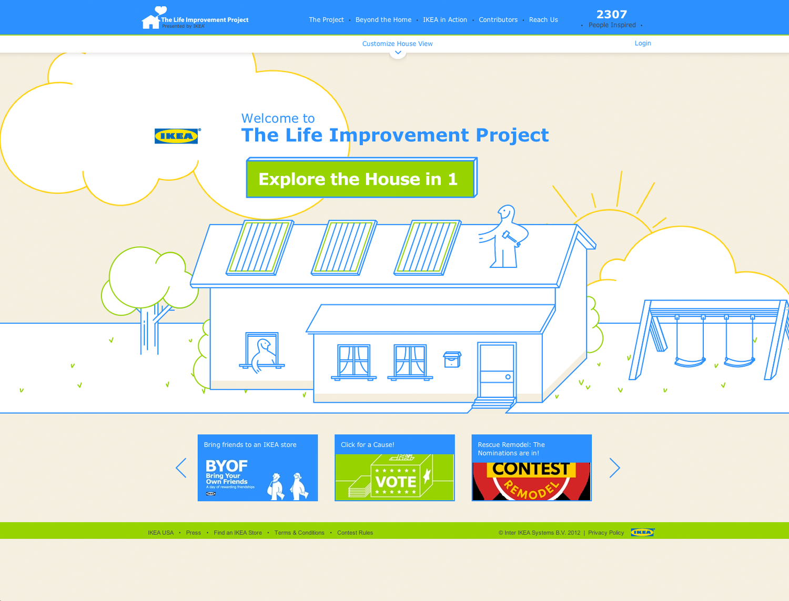
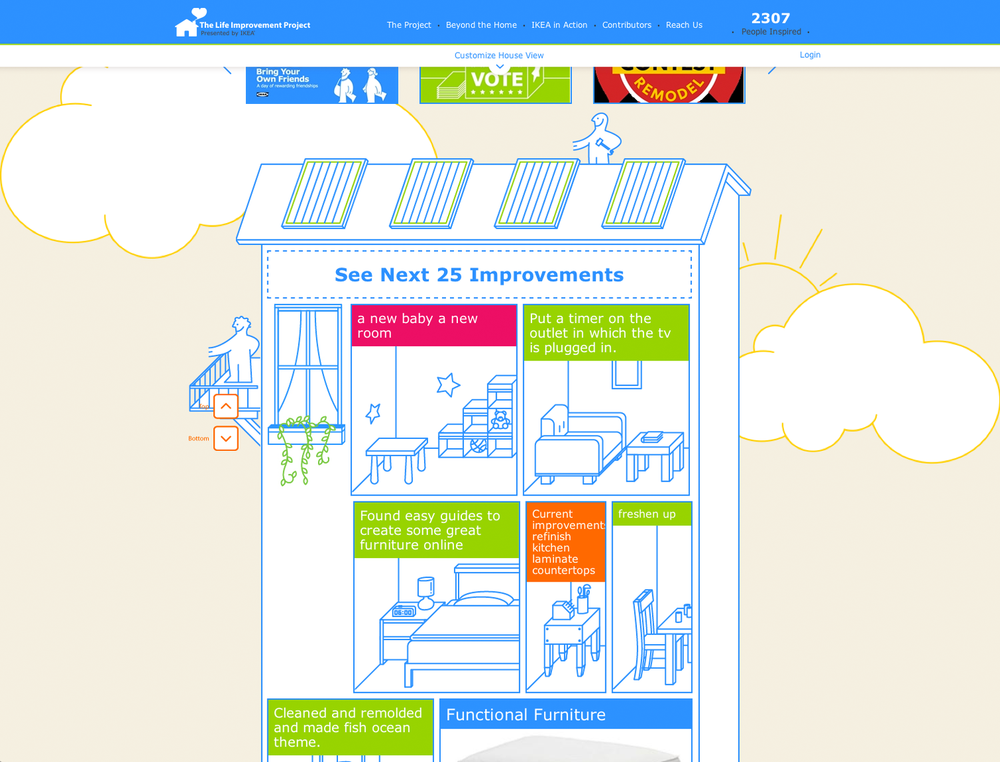
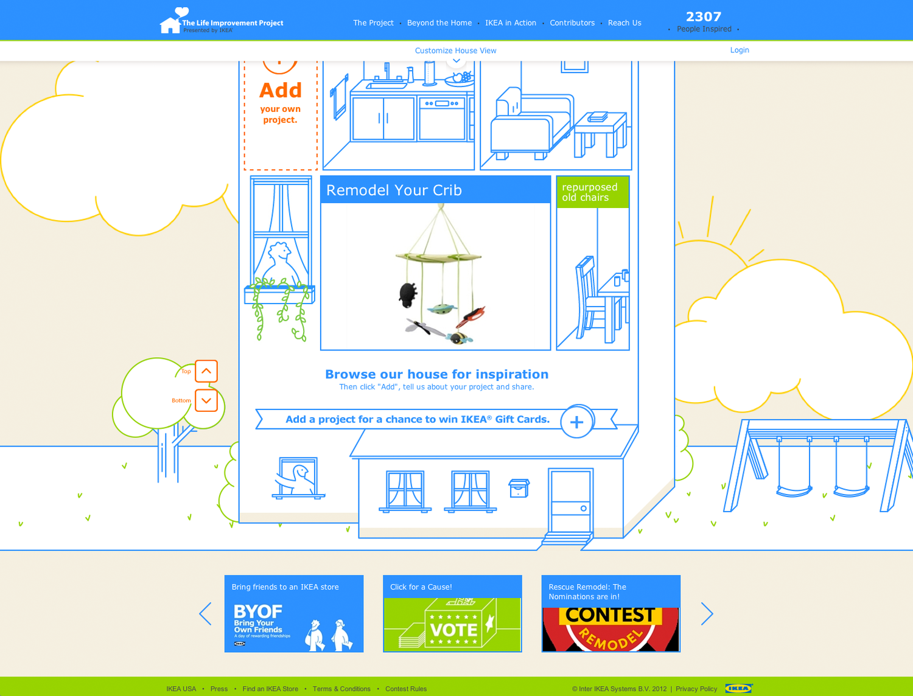
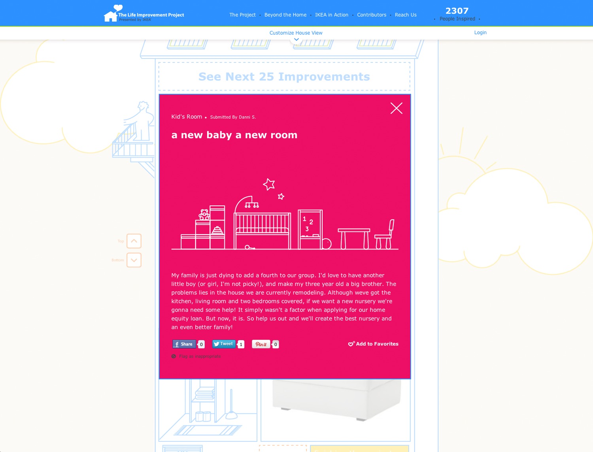

IKEA
The Life Improvement Project
Role: Group Creative Director

IKEA, is quite proud of their innovations and their goal to reduce waste wherever possible.
To connect IKEA's interest in improving life they wanted to ask the community at large to show how they improved life - no matter how big or small. To motivate participation, small rewards were given out weekly and monthly. Also, whenever a new project is submitted or shared, a dollar is donated to Save the Children's Early Steps to School Success.
The projects are all showcased in a never ending, upward (expanding) scrolling house. We used the illustrative style of IKEA's well known instruction manuals as a starting point for the look and feel of the experience.
It was awarded a Bronze at the 2013 DMA ECHO Awards.


